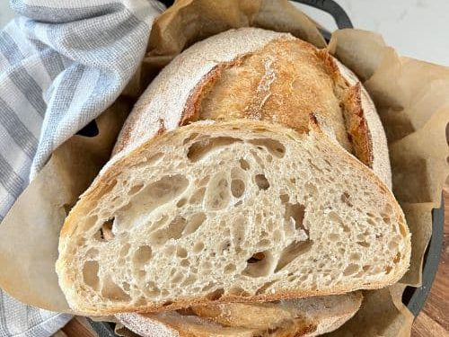

Sourdough bread
Making sourdough bread is very labor intensive, but it is a labor of love.
To be able to create sourdough bread, one must first have a thriving sourdough starter, which is essentially wild yeast.
This starter will not only proof your bread, but it will also give it its iconic, slightly acidic flavor.
Sourdough bread is fermented and therefore pretty healthy!